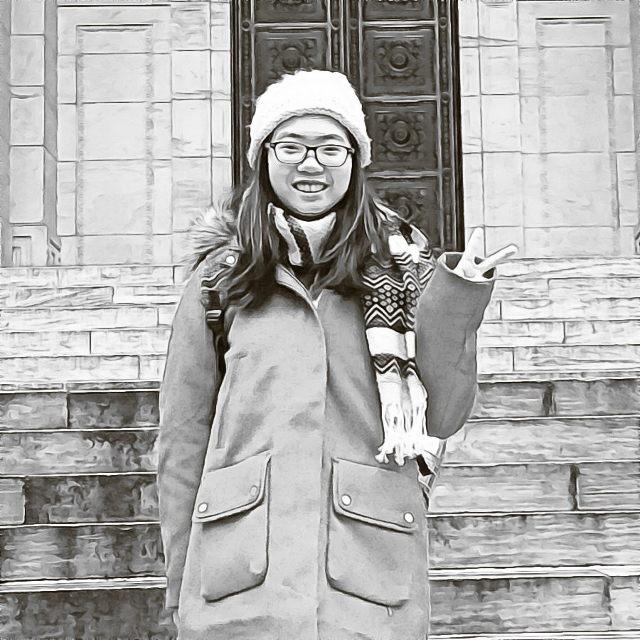

She is a student currently pursuing for Master of Science in urban planning program at Columbia University in the City of New York. Her research interest includes the application of urban analytic techniques, such as spatal analysis and data mining in the field of urban planning.
This website is a temporary place keeping updating her individual homework and group projects for the course of Data Visualization for Architecture, Urbanism, and Humanities in Spring 2018.
